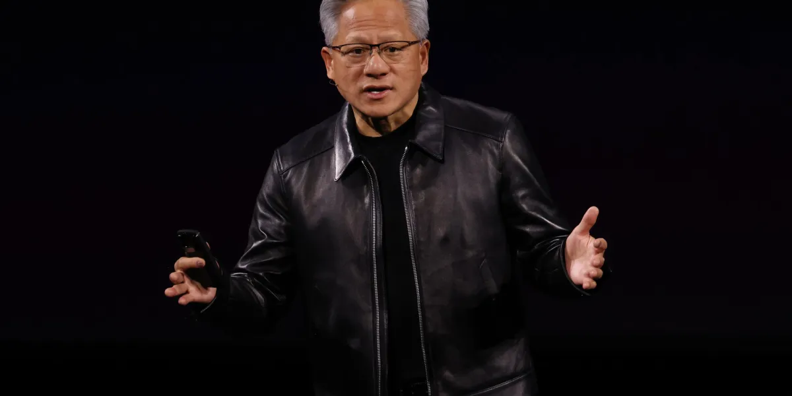
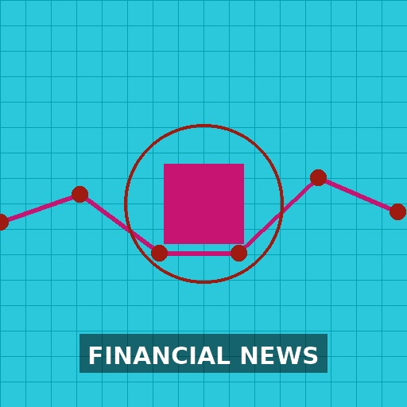

01 / EXECUTIVE BRIEF
What matters now
02 / SECTOR INTELLIGENCE
Signals across the board
Information Technology & Semiconductors
Robust AI-led equity rally coupled with intensifying regulatory, governance, and export control headwinds.
Implication: Valuation multiples remain supported by AI demand, but sanctions compliance and political risks introduce near-term volatility for market leaders.
Consumer Discretionary & Retail
Solid holiday foot traffic and travel demand challenged by inflation-wary shoppers gravitating toward deep discounts.
Implication: Volume favors off-price and value retail chains, while full-price department stores and electronics face potential margin squeeze.
Energy & Transportation
Sharp decline in fuel costs offering immediate relief across transport networks while testing airline liquidity buffers.
Implication: Reduces operating cost pressures for airlines and transport, although regional operators facing cash crunches highlight uneven balance sheet strength.
Financial Services & Capital Markets
Emerging market debt and currency recovery alongside tighter regulatory scrutiny on gold-backed credit in Asia.
Implication: Strong appetite for EM sovereign debt and FX contrasts with localized collateral strain in gold lending following bullion volatility.
Defense & Cybersecurity
Escalating cloud breaches targeting defense installations alongside widespread enterprise system disruptions.
Implication: Forces prioritization of zero-trust security architectures and accelerates federal and enterprise cybersecurity capital expenditure.
03 / RISK ASSESSMENT
Known downside
Semiconductor Export Sanctions and China Evasion Risks
Hedge single-stock semiconductor exposure and emphasize diversified semiconductor equipment and foundry providers.
European Economic Stagnation and Trade Deterioration
Underweight European export-dependent cyclicals and maintain defensive hedges via US dollar and quality sovereigns.
Cloud Security Breaches and Critical Infrastructure Disruption
Increase portfolio allocation to pure-play cybersecurity leaders and require multi-vendor cloud redundancy.
04 / POSITIONING
Portfolio responses
Opportunities
Maintain Core Allocation to AI Infrastructure and Mega-Cap Tech
S&P 500 best week since April 2025 demonstrates powerful institutional demand for foundational AI and hardware leaders.
Overweight Value-Oriented Retailers and Travel Platforms
Consumers continue prioritizing holiday travel and budget-friendly value merchandise despite persistent price sensitivity.
Selectively Allocate to High-Beta Emerging Market Equities and Debt
Brazilian Real's strongest week since 2020 and oversubscribed EM sovereign bonds signal robust foreign inflow and stabilizing macro fundamentals.
Defensive
Underweight Continental European Equities
France entering recession due to export weakness signals broader macro headwinds and earnings risk across the Eurozone.
Overweight Enterprise and Defense Cybersecurity Providers
Penetrations of US Air Force cloud systems and widespread enterprise IT disruptions necessitate mandatory security budget upgrades.
05 / OUTLOOK
The road ahead
1—3 MONTHS
Constructively bullish on US equities led by AI momentum, lower fuel costs, and active holiday shopping, tempered by discount margin pressure.
6—12 MONTHS
Favorable on secular AI adoption and resilient emerging markets, with downside risks tied to European contraction, tech geopolitical barriers, and cyber threats.
Key catalysts
Watch list
06 / SOURCE INTELLIGENCE
Reporting behind the view

Jensen Huang faces Congress. Trump 'made the deal' to restore the CEO of $25M ballroom donor Nvidia
VIEW STORY ↗ Dynamic visual
Dynamic visualEmerging-Market Stocks Snag Best Week Since June on Tech Rebound
VIEW STORY ↗Plunging Fuel Prices Bring Relief for Drivers and Central Banks
VIEW STORY ↗
Dynamic visual